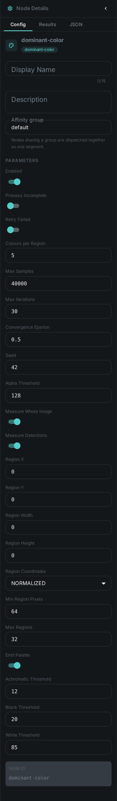
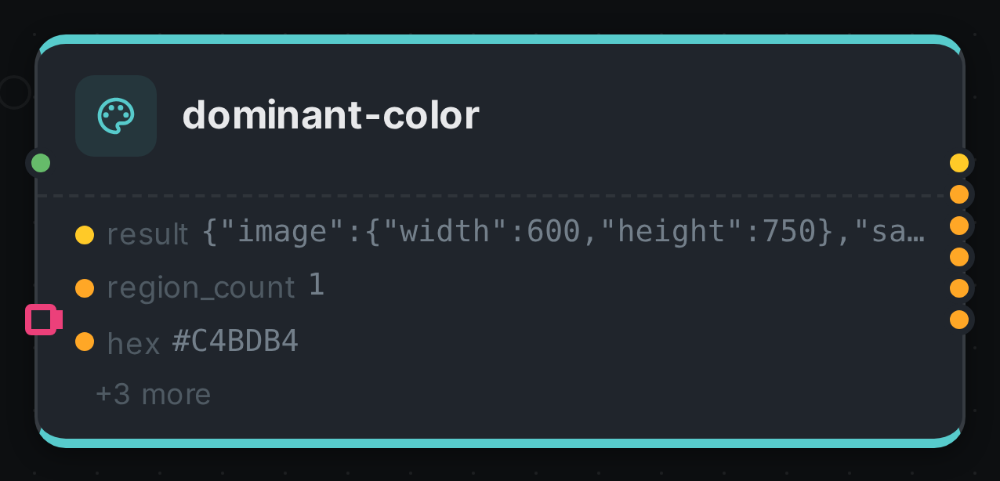

Colour is one of the first things anyone notices about a picture and one of the last things most media systems can actually search on. This node closes that gap: it works out which colours a photo is really made of, and reports each one both as a precise value and as a word a person would use.
So the same result gives you #E2711D for your design tools, and "vivid orange" — or kräftiges
Orange — for your search box, your caption prompt and your editors.
It runs no model. All of it is arithmetic, so it costs no GPU time, needs nothing installed alongside it, and finishes in milliseconds.
Kind |
|
Applies to |
Images |
Input ports |
|
Output ports |
|
Requirements |
None — no model, no sidecar, no GPU |
Persists to |
|
What it produces
For each area it measures: the dominant colour, the ranked palette behind it, and how much of the area each colour accounts for.
{
"image": { "width": 1920, "height": 1080 },
"regions": [
{
"id": "whole", "kind": "IMAGE", "pixels": 39204,
"dominant": {
"share": 0.4712,
"hex": "#E2711D",
"rgb": { "r": 226, "g": 113, "b": 29 },
"hsl": { "h": 30.5, "s": 77.3, "l": 50.0 },
"lab": { "l": 60.13, "a": 38.21, "b": 62.35 },
"lch": { "c": 73.13, "h": 58.5 },
"name": { "term": "orange", "en": "vivid orange", "de": "kräftiges Orange" }
},
"palette": [
{ "share": 0.4712, "hex": "#E2711D", "name": { "en": "vivid orange", "de": "kräftiges Orange" } },
{ "share": 0.3105, "hex": "#6B4E8C", "name": { "en": "dark purple", "de": "dunkles Violett" } },
{ "share": 0.2183, "hex": "#F2C57C", "name": { "en": "light yellow", "de": "helles Gelb" } }
]
}
]
}The share values tell you how much of the picture each colour covers, so you can render a real
proportional swatch strip rather than a list of equal chips.
Three ways to give a colour a name
Each colour comes back with three labels, and they are meant for different jobs:
| Field | Use it for |
|---|---|
|
Filtering, facets and grouping. One of eleven stable words — red, orange, yellow, green, blue, purple, pink, brown, black, grey, white — that never changes when the wording is refined |
|
Showing to people, and feeding caption prompts. Fuller descriptions like "dark greyish blue" or dunkles graustichiges Blau |
|
Design tools, palettes and exact comparisons |
Why the names sound like a person picked them
Computers usually name colours by finding the closest entry in a long list, which produces "lightsteelblue3" and similar. This node does something closer to what people do: it decides the basic colour first, then describes it.
The basic colour is chosen in a perceptual colour space — one built so that the distance between two colours matches how different they look to a human eye, which is not true of raw RGB. The description is then built from how light and how saturated the colour is, giving pairs like "pale blue" and "deep blue", or blasses Blau and tiefes Blau.
Two consequences worth knowing:
-
Greys, blacks and whites are never given a hue. Below a saturation threshold the node stops asking "which colour is this?" and answers on brightness alone, so you get "light grey" rather than a technically-correct-but-absurd "light greyish orange".
-
German is generated, not translated. Both languages come from the same decision, so they can never drift apart or describe the same colour differently.
Colouring in parts of a picture
Connect a detector to the detections port and the node measures every box that arrives, alongside
the whole frame. That turns "this photo is mostly blue" into "this person is wearing blue". The
port carries a sequence, so it does not matter whether the detector found one box or thirty — and it
does not matter which detector produced them.
You can also pin it to a fixed area — a logo corner, a lower third, a product region — without any
detector at all, using the region options below.
Configuration

Set these in the panel above, or in the node’s options block in a pipeline definition:
| Option | Meaning |
|---|---|
|
How many colours to pull out of each area. Default 5 |
|
How many pixels to look at per area. Default 40,000 — enough for a stable answer on any size of picture |
|
Measure the whole frame. On by default |
|
Measure every detected box as well. On by default. The boxes come from whatever is connected to the |
|
A fixed area to measure. Given as fractions of the picture by default; set |
|
How opaque a pixel must be to count. Transparent areas are ignored rather than treated as white, so a logo on a transparent background reports its own colours. Default 128 |
|
Areas smaller than this are skipped — there is nothing meaningful to measure. Default 64 |
|
Upper bound on detected areas, largest first. Default 32. Anything dropped is reported in the result |
|
Return the full ranked palette, not only the top colour. On by default |
|
How unsaturated a colour must be before it is called grey, black or white instead of being given a hue. Default 12 |
|
Where black ends and white begins on the brightness scale. Defaults 20 and 85 |
|
The same picture always produces the same palette. Change this only if you want a different-but-still-repeatable result |
Seeing it run
Turn on Debug Mode and every node keeps what it produced, on the
card itself. Below is a real run of this node over pexels-photo-2379005.jpeg.

The strip on the card lists what each output port carried — result, region_count, hex, and 3 more.
Use Cases
-
Search and filter by colour — "show me the orange product shots", "find the photos with a green background".
-
Brand compliance — check that assets actually use the brand palette, and flag the ones that drift.
-
Better captions — feed "vivid orange sky, dark purple hills" into a caption prompt instead of hoping the model notices.
-
Automatic theming — pull a page or player accent colour straight from the hero image.
-
Design handoff — hand editors a real palette with proportions, in HEX and in words.
-
Bilingual catalogues — the same asset is searchable as "blue" and as Blau with no extra work.
Good to know
-
Video is not supported yet. Colour changes shot to shot, so a single answer for a whole clip would be misleading. Run it on stills, or on extracted frames.
-
A picture that cannot be opened is reported as a failure, not quietly skipped — so a corrupt file shows up in the run summary instead of disappearing. CMYK JPEGs are the common case Java cannot decode.
-
Cyan and teal are reported as blue, and turquoise as light blue. The eleven basic colour words are chosen because they exist in every language; finer shades are always available as HEX.
-
The result is repeatable. The same picture and settings always give the same palette, so cached results and search facets stay stable.